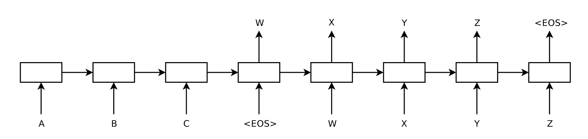

NeurIPS 2014 · 구글 브레인
1. 시퀀스-투-시퀀스 학습
Sequence to Sequence Learning with Neural Networks

가변 길이의 시퀀스를 고정 벡터로 압축하고 다시 가변 길이로 풀어내는 혁신적 인코더-디코더 프레임워크를 정립한 기념비적 논문.
- ✨ 핵심 기여: 4층 심층 LSTM + 입력 문장 역순(Reverse) 트릭
- 📊 성능: WMT'14 En-Fr 단일 34.8 BLEU (SMT 능가)
- 🖼️ 포함 이미지: 인코더-디코더 구조도, PCA 임베딩 군집도 등